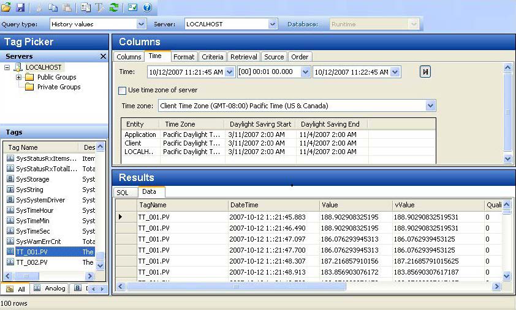
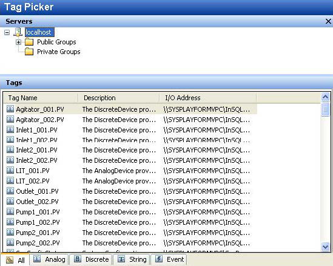
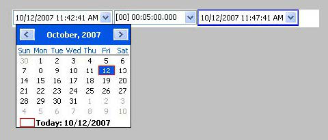
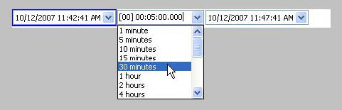
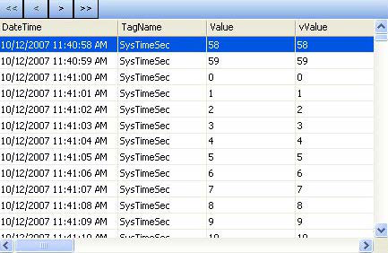
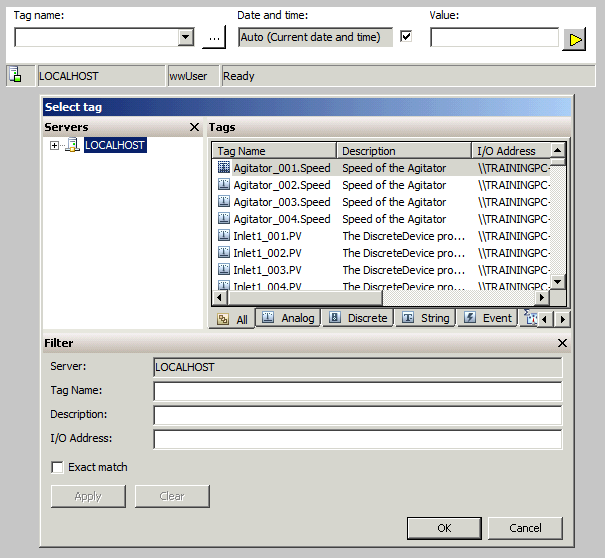
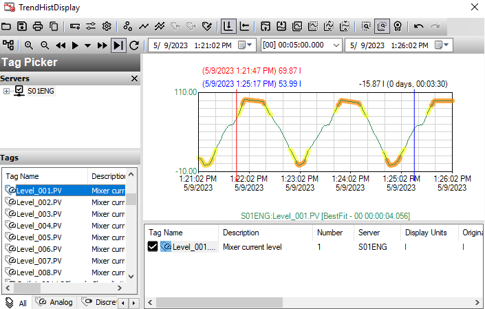
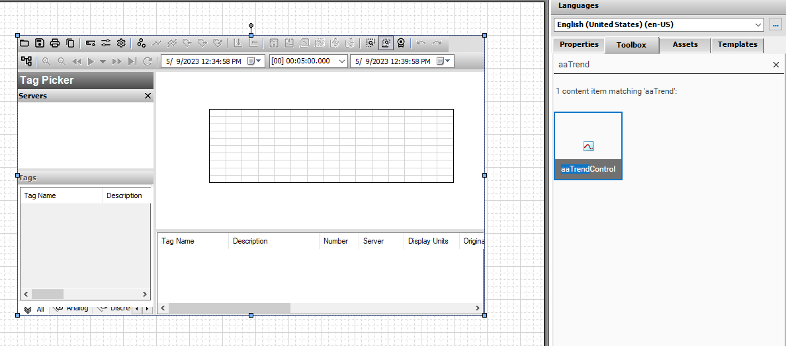

Module 6 — Trend Visualization | Pages 423–430
aaHistClientQuery Control
The aaHistClientQuery control runs the Historian Client Query program (or a functional subset)
from within the InTouch HMI software or a .NET container like Visual Basic .NET or Internet
Explorer.
Query is a client application that retrieves data from a Historian database or any SQL Server
database and returns the results in a table format. If querying the Historian database, choose from
a number of predefined query types and easily select the options for each type, eliminating the
need to know SQL syntax.
Custom queries can also be written, if the SQL syntax and the schema of the database are known.

aaHistClientTagPicker Control
The aaHistClientTagPicker control displays the hierarchy of objects in the Historian database (for
example, tags, InTouch nodes, events, and so on) in a hierarchical format.
Unlike the other Historian Client controls, the aaHistClientTagPicker control does not provide a
user interface to select and connect to a Historian. A programmatic interface needs to be added to
allow this functionality.
The following code can be used in a script to allow a user to log on to the Historian located in the
localhost:
aaTagPicker1.Servers.Add( "localhost" );

aaHistClientTimeRangePicker Control
The aaHistClientTimeRangePicker control allows date and time parameters to be selected.


aaHistClientActiveDataGrid Control
The aaHistClientActiveDataGrid control can run any SQL query from any Historian or Microsoft
SQL Server database and return the results in a grid.
Note: The aaHistClientActiveDataGrid control does not support data definition or data
manipulation queries.
Unlike the other Historian Client controls, the aaHistClientActiveDataGrid control does not provide
a user interface to select and connect to a SQL Server or specify the query that will feed data to
the grid. A programmatic interface needs to be added to allow this functionality.
The following code can be used in a script to connect to the local Historian as aaUser and query
history data for the SysTimeSec tag:
aaTagPicker1.Servers.Add( "localhost" );
aaHistClientActiveDataGrid1.ServerName = "localhost";
aaHistClientActiveDataGrid1.UserName = "aaUser";
aaHistClientActiveDataGrid1.Password = "pwUser";
aaHistClientActiveDataGrid1.DatabaseName = "Runtime";
aaHistClientActiveDataGrid1.SQLString = "SELECT * FROM History
WHERE Tagname = 'SysTimeSec'";
aaHistClientActiveDataGrid1.Connected = 1;

aaHistClientSingleValueEntry Control
Use the aaHistClientSingleValueEntry control to manually add a tag value to the Historian
database.

Display
Introduction
In this lab, you will create a symbol and embed the Historian Client Trend. This trend will be used
to display and compare levels from different mixers. Additionally, you will add navigation to open
this trend and view alarm highlights for the levels at runtime.
Objectives
Upon completion of this lab, you will be able to:
Embed the Historian Client Trend .NET control in a symbol
Use the AddServerEx() script function to initialize the Historian Client Trend
Use the Historian Client Trend Tag Picker to add tags to the trend at runtime

Create a Historian Client Trend Display
First, you will create a symbol and embed a Historian Client Trend .NET control.
1.
In the IDE, on the Graphics tab, in the Training toolset, create a symbol named
TrendHistDisplay, and then open it for editing.
2.
On the Toolbox tab, search for aatrend and then drag aaTrendControl to the canvas.
3.
Name the graphic Trend.
4.
Right-click the canvas and select Custom Properties.

Review the sections above for the main topics, step-by-step procedures, and important configuration details.
This is part of the InTouch HMI layer, which integrates with Application Server's Galaxy for a complete visualization solution.
Module 6 — Trend Visualization. AVEVA InTouch for System Platform 2023 Training.
Next: Lesson L34 — Historian Client Trend + Lab 19